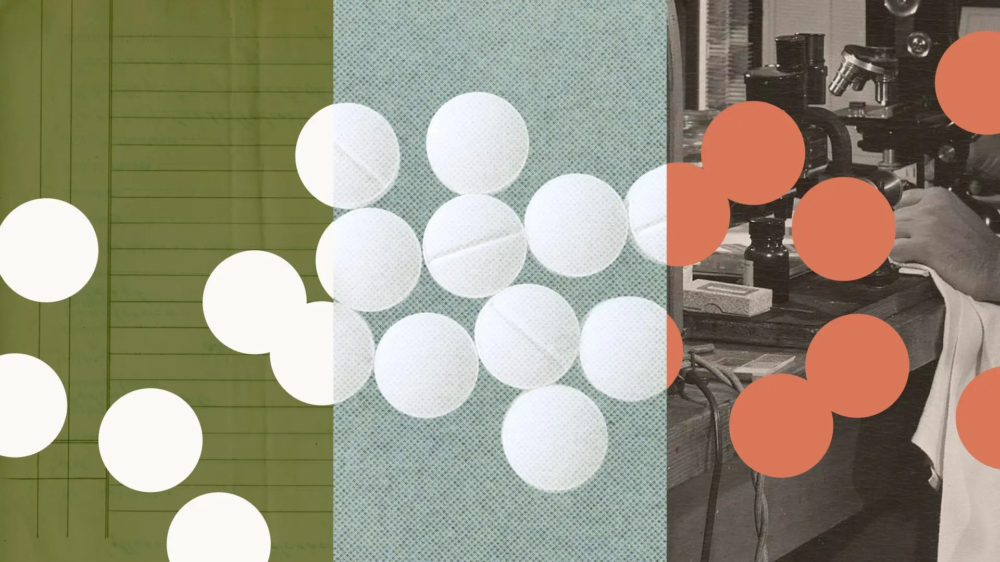

科学（Science） 2026 年 10 月 27 日

已发布 2026 年 10 月 27 日 团队 科学 主题相关文章 * 公告 2026 年 7 月 20 日 申请Anthropic的AI for Science罕见病研究资助
查看更多 Anthropic的生命科学团队正致力于加速攻克疾病。过去几个月里，我们的科学家与六家研发新药的组织开展了深度研究合作：BigHat Biosciences、Bristol Myers Squibb、Divergence Labs、Enveda、Generate Biomedicines以及The Column Group。我们也已启动自己的药物发现工作。在此过程中，我们对Claude如何支持药物研发、以及还需如何进一步改进Claude才能实现AI在医学中的潜力，有了大量认识。我们计划从这里开始大幅扩展这项工作。 加速药物研发的机会很多，甚至超出了人们最常讨论的AI应用，例如为新分子提出初始设计。开发一款药物涉及多种多样的任务：开展早期研究以确定药物靶点及与之结合的正确药物类型，设计具备合适性质的分子，优化分子使其能够可靠地大规模生产，起草开展临床试验所需的监管申报文件，设计并实施这些试验，以及诸多其他工作。 我们实现AI医疗效益的战略，是让AI越来越多地参与到所有这些任务中。并不存在单一待解决的问题；瓶颈分布在药物研发流程的各个环节。识别并突破这些瓶颈的最佳方式，是深入参与真实的药物项目，覆盖众多不同的疾病领域和研发阶段。 因此，过去几个月里，我们与六家组织合作开展了这项工作。我们也启动了自己的药物发现工作，包括针对罕见儿童型肌营养不良症的项目，其中Claude承担了大部分科学与运营工作。 这项工作从三个方面服务于我们的目标。首先，它让我们能更好地理解模型在更广泛药物研发任务中的优势与局限（基于迄今所学，我们已为模型确定了若干具体改进的优先次序）。其次，这些项目可以作为更广泛生命科学界的案例研究。若要让Claude显著提高新疗法的产出速度，我们需要与更多生物技术公司合作，并把Claude更深入地融入他们的研发流程。第三，如果这些项目继续保持良好势头，它们本身也应产生直接影响。我们乐观地认为，其中一些可能为其所针对的疾病带来有效的新药，包括食物过敏、罕见儿童疾病以及若干种癌症。 在这篇文章中，我们介绍与合作伙伴取得的进展，并附上更详细描述我们思路、方法与早期成果的技术报告。随后，我们简要概述下一步的工作方向。
Generate Biomedicines：治疗模式工程。Generate Biomedicines一直致力于提升一种名为CAR T细胞疗法的癌症治疗手段的实用性。该疗法历来用于治疗血细胞癌症；Generate希望对其进行重新设计，使其也能治疗实体瘤癌症。为此，他们计划缩短该疗法遗传指令中的一部分，从而为适用于其他癌症类型的额外指令腾出空间。六名Generate科学家使用Claude Code为这一部分提出新设计。其中一项设计比标准版本短约70%，在实验室测试中效果更佳：它使免疫细胞产生的受体（免疫细胞用来识别癌细胞的蛋白质）数量约为原来的10倍，更高效地杀死肿瘤细胞，且免疫细胞保持活性的时间更长。阅读更多，并参见Generate的技术报告。 Divergence Labs：苗头化合物生成。Divergence Labs正在研究一种治疗食物过敏的新方法。食物过敏由一种名为IgE的分子引发的反应触发，其中一部分IgE附着在我们的免疫细胞上，另一部分则游离在血液中。Divergence Labs正在开发的药物会把IgE从免疫细胞上完全剥离，而不像标准药物那样仅中和血液中循环的IgE。这有望提供有效得多的疗法，但需要精确的设计，具备两条"臂"：一条紧密结合IgE，另一条帮助把IgE从免疫细胞上撬开。Claude把Divergence Labs的目标转化为详细的设计方案，随后基本自主地在一个月左右生成了约35,000个抗体设计，供筛选和测试。在这些早期测试中，Divergence为两条"臂"都找到了"苗头"：三个能结合IgE的设计，以及20个能使其脱落的设计。这20个中有三个使IgE脱落的效果似乎超过标准药物。其下一步是构建一种把两条"臂"结合起来的药物。阅读更多，并参见Divergence的技术报告。 BigHat Biosciences：先导化合物优化。BigHat Biosciences把AI与自动化实验室结合起来改进潜在药物（即"先导化合物"），这些药物必须紧密绑定靶标、在生产和储存过程中保持稳定，并避免聚集结块（以及其他标准）。BigHat的科学家与一名Anthropic研究员借助Claude改进两个先导化合物的这三项性质，二者都是可能成为未来药物组成部分的抗体片段：一个设计用于靶向癌细胞，另一个设计用于延长药物在体内的留存时间。Claude接入BigHat的实验室数据系统Reccy后，为每个分子提出改动建议，BigHat的实验室在约10周内制备并测试了约1,010个变体。中途，团队怀疑标准的热稳定性和聚集指标具有误导性。Claude与研究员重新分析了原始数据，随后提出不同的指标以及验证它们的实验方案调整。BigHat的科学家完善并实施了该方案，主要预测得到验证。与原始版本相比，最优版本结合紧密程度提高10倍以上，靶向癌细胞的先导化合物保持溶解的温度提高了18°C，而用于长效药物的先导化合物聚集速度慢了100倍以上。阅读更多，并参见BigHat的技术报告。 Enveda：生产与申报。要开展临床试验，公司需要留存记录以证明新药的每一批次都按严格质量标准生产，并向监管机构提交申请，此外还有其他要求。在Enveda，生产化学师最多把75%的时间花在文书工作上。为减轻负担，Enveda搭建了一套系统，把其全部生产文档接入Claude，再让Claude标出任何可能的问题。在对1,061页文档的测试中，Claude找出了人工审核者发现的全部11个问题——还标出了他们遗漏的7个。在此过程中，该方法把人工审核时间减少了89%，从超过25小时降至不足3小时。另外，Claude起草了两份重要监管文件的初稿。其中一份耗时四小时，而人工撰写约需三个月。对另一份，Enveda的标准人工审核流程只发现一处小错误。阅读更多，并参见Enveda的技术报告。 The Column Group（TCG）：公司创建。由于药物发现可能缓慢、昂贵且容易失败，生物技术公司的投资者往往偏爱更安全、此前已验证的思路，而非风险更高的新思路，即便后者能帮助更多患者。我们一直与TCG合作，看Claude能否通过缩短药物发现的时间与成本来改变这一局面，使投资者有信心支持更有雄心的想法。具体而言，TCG正在创办一家新公司Pleiades，它将用Claude运行比小团队通常所能承担的更多、也更复杂的药物项目。这可能成为一种范例，展示Claude如何降低运营一家生物技术公司所需的科学以及运营与行政开销。如果奏效，这一模式可在全行业复制，把投资引向医学中更棘手的问题。Pleiades目前正在为Claude开发新的工具与工作流；其首个Claude技能帮助Claude评估药物靶点是否值得跟进，已在45个靶点—疾病配对上完成评估。阅读更多。 更近期，我们还开始与Bristol Myers Squibb（BMS）合作，寻找并解决临床试验规划中的瓶颈。BMS正用Claude评估一款处于临床试验早期阶段药物的方案，并估计这些试验成功的可能性。我们计划共同在2027年扩展这项工作，以了解其在提高早期研发成功率方面的潜力。
"我们在临床试验阶段使用Claude分析专有数据、制定临床研究方案，并权衡研究成功的几率。仅凭一条提示，Claude就生成了扎实初步分析，为我们评估不同开发方案提供了依据，而这项工作原本需要数天才能完成。所有这一切都是在确保高度敏感数据安全的前提下完成的。我们期待把这项工作扩展到整个研发管线，以支持组合层面的决策。" Michael Pourdehnad, MD，早期临床开发、血液学、肿瘤学与细胞治疗高级副总裁兼负责人。 除与这些合作伙伴的工作外，我们已开始自行开展一些研究项目。我们收购了Mithril Medicine，这是一家由一人运营、一直在为两种罕见型肌营养不良症开发疗法的公司。其创始人Cody Tranbarger用Claude统筹与11家外部实验室的合同、物流和实验，并把Mithril运营的许多其他事务交给Claude处理。结果，Mithril在不到18个月里，把一种肌营养不良症的可能疗法从构想推进到在小鼠中取得可喜结果。如今Cody在Anthropic继续这项研究，并计划启动若干新项目。如果他的候选药物持续表现良好，我们预计最早在2028年底就有一款药物可准备启动人体临床试验。阅读更多，并参见我们的技术报告。
所有这些研究仍处于早期阶段。尤其是，迄今大多属于_临床前—_也就是说，大体上尚未进入药物在人体中测试的阶段。随着这些药物项目推进，以及我们与更多药物研发项目已进入临床阶段的组织合作，我们计划继续把Claude的作用扩展到临床试验中。 这项研究只是我们加速药物发现努力的一部分。最终，我们希望把模型分享给尽可能多的药物研发研究者。为此，我们推出了面向研究者的AI工作台Claude Science，并提供面向生命科学家的Claude额度。我们还设立了生命科学验证计划，让可信组织能在更宽松的安全防护版本下使用我们最强大的模型——这些防护对防止滥用必不可少，却也可能妨碍合法的生物学研究。我们近期还在生命科学领域发起了客座研究员公开征集；我们正寻求那些希望用Claude探究药物发现及其他领域关键问题的研究团队提交方案。 随着生命科学研究的扩展，我们期待与更多组织合作。如果您所在机构专注药物发现并有意与我们合作，可通过下方与我们联系。
如果您所在机构专注药物研发并希望取得联系，请填写以下表单。
Published Oct 27, 2026 Team Science Topics
Related articles * Announcements Jul 20, 2026 Apply for Anthropic’s AI for Science rare disease research grants
View more Anthropic’slife sciences team is working to accelerate curing disease. Over the past several months, our scientists have engaged in deep research partnerships with six organizations developing new medicines: BigHat Biosciences, Bristol Myers Squibb, Divergence Labs, Enveda, Generate Biomedicines, and The Column Group. We've also begun drug discovery efforts of our own. In doing so, we've learned a lot about how Claude can support drug development, and how we’ll need to improve Claude further to realize AI's potential in medicine. We plan to scale this work up substantially from here. There are many opportunities to speed up drug development, even beyond the most commonly discussed applications of AI, like proposing initial designs for new molecules. Developing a drug involves many varied tasks: doing early research to identify a target for a drug and the right type of drug to engage it, designing a molecule with the right properties, optimizing it to be manufactured reliably at scale, drafting the regulatory filings needed to run clinical trials, designing and administering those trials, and much more. Our strategy to realize AI’s medical benefits is based on having AI increasingly involved in all of these tasks. There is no single problem to solve; the bottlenecks are distributed all throughout the drug development process. The best way to identify and work through these bottlenecks is to get deeply involved in real drug programs, across many different disease areas and stages of development. So, over the past several months, we’ve partnered with six organizations to do so. We’ve also started drug discovery efforts of our own, including programs for rare childhood forms of muscular dystrophy, where Claude handles much of the scientific and operational work. This work serves our goals in three ways. First, it lets us better understand the strengths and limitations of our models in relation to a much wider range of drug development tasks (we’ve already prioritized specific improvements to our models based on what we’ve learned so far). Second, these programs can serve as case studies for the wider life sciences community. If Claude is to significantly increase the rate of new cures, we need to work with many more biotechnology firms and integrate Claude more deeply into their development processes. Third, these projects should, if their positive trajectories continue, have direct impact themselves. We’re optimistic that some may result in effective new medicines for the diseases they target, including food allergies, rare childhood diseases, and several forms of cancer. In this post, we provide an update on our progress with our partners, along with technical reports that describe our thought process, methods, and early results in more detail. We then briefly outline where our work is headed next.
Generate Biomedicines: modality engineering. Generate Biomedicines has been working on increasing the usefulness of a cancer treatment known as CAR T-cell therapy. This therapy has historically helped treat blood cell cancers; Generate aims to reengineer it so that it can treat solid tumor cancers too. To do this, they’re aiming to shorten one part of the therapy’s genetic instructions, which would create room for additional instructions suited to other kinds of cancer. Six Generate scientists used Claude Code to propose new designs for this part. One design was about 70% shorter than the standard version, and in lab tests it was more effective: it allowed immune cells to make roughly 10 times as many receptors (the proteins they use to spot cancer cells), it killed tumor cells more efficiently, and the immune cells remained active for longer. Read more, and see Generate’s technical report. Divergence Labs: hit generation. Divergence Labs is working on a novel way to treat food allergies. Food allergies are set off by a reaction from a molecule called IgE, some of which is attached to our immune cells and some of which floats freely in our blood. Divergence Labs is developing drugs that would detach the IgE from our immune cells entirely, rather than solely neutralizing the IgE circulating in our blood, as standard medications do. This could provide a much more effective treatment, but it requires a precise design, with two “arms”: one that would bind tightly to IgE, and another that would help prise IgE from the immune cell. Claude converted Divergence Labs’ goals into a detailed design plan, and then, largely autonomously, generated roughly 35,000 antibody designs in about a month to be narrowed down and tested. In those early tests, Divergence found “hits” for both arms: three designs that could bind to IgE, and 20 that could dislodge it. Three of those 20 appeared to dislodge IgE more than the standard medication. Its next step is to build a drug that combines the two arms. Read more, and see Divergence’s technical report. BigHat Biosciences: lead optimization. BigHat Biosciences pairs AI with an automated lab to improve potential drugs (or “leads”), which must bind their target tightly, remain stable through manufacturing and storage, and avoid clumping together (among other criteria). BigHat’s scientists and an Anthropic researcher worked with Claude to improve these three properties in two leads, both antibody fragments that could become parts of future drugs: one designed to target cancer cells, and one designed to keep a drug in the body longer. Claude, connected to BigHat’s lab data system, Reccy, proposed changes to each molecule, and BigHat’s lab made and tested about 1,010 variants in about 10 weeks. Partway through, the team suspected the standard heat-stability and clumping metrics were misleading. Claude and the researcher reanalyzed the raw data, then proposed different metrics and a protocol change to test them. BigHat’s scientists refined and ran it, and the main predictions held. Compared with the originals, the best versions bound more than 10x more tightly, the cancer-targeting lead stayed in solution 18°C higher, and the lead for longer-lasting drugs clumped more than 100x more slowly. Read more, and see BigHat’s technical report. Enveda: manufacturing and filings. To conduct clinical trials, companies need records showing that each batch of a new drug has been made to strict quality standards, and to submit an application to regulators, among other requirements. At Enveda, manufacturing chemists spent up to 75% of their time on paperwork. To ease the load, Enveda built a system that connects all of its manufacturing documents to Claude, then lets Claude flag any possible issues. Over tests on 1,061 pages of documentation, Claude caught all 11 issues that human reviewers had spotted—and flagged seven they’d missed. In the process, this method reduced human review time by 89%, from over 25 hours to less than three. Separately, Claude wrote the first drafts of two important regulatory documents. One took four hours, compared to about three months by hand. For the other, Enveda’s standard human review process found one minor error. Read more, and see Enveda’s technical report. The Column Group (TCG): company creation. Because drug discovery can be slow, expensive, and prone to failure, investors in biotechnology companies have favored safer, previously validated ideas over riskier new ones, even when the latter could help more patients. We’ve been working with TCG to see whether Claude can change this by cutting the time and cost of drug discovery so that investors can confidently support more ambitious ideas. Specifically, TCG is establishing Pleiades, a new company that will use Claude to run many more—and more complex—drug programs than is usual for a small team. This could be a model for how Claude can reduce both the scientific and the operational and administrative overhead required to run a biotechnology company. If this works, this model could be replicated across the industry and direct investment toward harder problems in medicine. Pleiades is currently developing new tools and workflows for Claude; its very first Claude skill, which helps Claude assess whether drug targets are worth pursuing, has been evaluated on 45 target-disease pairs. Read more. More recently, we’ve also begun working with Bristol Myers Squibb (BMS) to find and address bottlenecks in clinical trial planning. BMS is using Claude to assess plans of an early-stage drug in clinical trials, and to estimate the likelihood of those trials succeeding. Together, we plan to expand this work in 2027 to understand its potential for increasing the probability of success in early development.
“We use Claude at the clinical trial stage to analyze proprietary data, create a clinical study plan, and weigh the study’s chance of success. From a single prompt, Claude generated a robust initial analysis that helped inform our assessment of different development options, which would otherwise take days to complete. We did all of this while ensuring the security of our highly sensitive data. We look forward to expanding this work across our pipeline to support portfolio-level decisions.” Michael Pourdehnad, MD , Senior Vice President, Head of Early Clinical Development, Hematology, Oncology and Cell Therapy. In addition to our work with these partners, we’ve begun to run some research programs ourselves. We’ve acquired Mithril Medicine, a one-person company that has been developing treatments for two rare forms of muscular dystrophy. Its founder, Cody Tranbarger, used Claude to organize contracts, logistics, and experiments with 11 external labs, and delegated many other aspects of Mithril’s operations to Claude. As a result, Mithril took a possible treatment for one form of muscular dystrophy from an idea to promising results in mice in less than 18 months. Now at Anthropic, Cody is continuing this research, and plans to start several new programs. If his drug candidates continue to hold up, we expect a drug to be ready to start clinical trials in humans as soon as late 2028. Read more and see our technical report.
All of this research is still at an early stage. In particular, so far it is mostly preclinical— that is, for the most part, it isn’t yet at the stage where the drugs are being tested in humans. We plan to continue extending Claude’s role into clinical trials as these drug programs advance, and as we partner with more organizations whose drug development programs are already at the clinical stage. This research is only one part of our efforts to accelerate drug discovery. Ultimately, we want to share our models with as many drug development researchers as possible. To that end, we’ve rolled out Claude Science, our AI workbench for researchers, and we’re providing Claude credits for life scientists. We’ve also created the Life Sciences Verification Program to allow trusted organizations to use our most powerful models with more permissive versions of our safeguards, which are necessary to prevent misuse but which can impede legitimate biological research. We’ve also recently launched an open call for guest investigators in the life sciences; we’re seeking proposals from research groups who want to use Claude to investigate key questions in drug discovery and other areas. We’re looking forward to working with many more organizations as we expand our life sciences research. If you work at an organization focused on drug discovery and are interested in collaborating with us, you can get in touch below.
If you work at an organization focused on drug development and would like to get in touch, complete the following form.